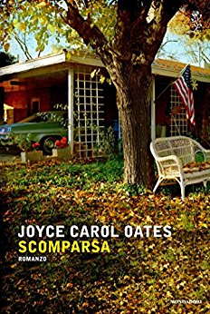

Scomparsa
(recensione di Manuela Fontenova)

Autore: Joyce Carol Oates
Editore: Mondadori
Pagine: 461
Genere: Thriller
Anno pubblicazione: 2016
Cercando sul dizionario la parola“scomparsa”, si trovano più definizioni: venire meno, sottrarsi alla vista, far perdere le tracce, morire.
Quale si potrebbe utilizzare per parlare di Cressida Mayfield?
Si, perché Cressida Mayfield, 19 anni, una sera di luglio del 2005 è uscita di casa dicendo che avrebbe cenato da un'amica e non è più tornata.
Scomparsa, sparita nel nulla, condizione aggravata dal fatto che Cressida vive a ridosso di una riserva naturale, una fitta foresta, dominata da ripide pendici, dove perdersi è facile tanto quanto è difficile essere ritrovati.
Nella piccola città di Carthage, partono subito le ricerche, squadre di volontari setacciano la foresta. I Mayfield sono una famiglia in vista: Zeno, il padre, è un noto avvocato ed ex sindaco, sua moglie Arlette una donna affabile e impegnata nel volontariato, e la bellissima figlia Juliet insegna alla scuole elementari.
Ma di Cressida non c'è traccia. Si è allontanata volontariamente? Dei testimoni l'hanno vista quella sera in un locale poco raccomandabile con Brett Kincaid, ex caporale dell'esercito rientrato da poco dall'Iraq ma soprattutto ex fidanzato, prossimo alla nozze con Juliet.
Sembra siano andati via insieme, ma Brett non ricorda, non è lucido, è convalescente in seguito ad un attacco subito in missione, ha riportato danni cerebrali, ha piccole amnesie.
Dov'è Cressida? Cosa le è successo?
Non posso spingermi oltre nella trama, rischierei di anticipare qualcosa, e allora vi riporto una frase del libro che a mio parere è la chiave di lettura del romanzo:
“Una catastrofe non investe solo una persona, non produce mai una sola vittima”
Con il pretesto di una scomparsa, Joyce Carol Oates, ci presenta un'indagine psicologica mirata e dettagliata; sonda l'animo umano con minuzia, e ci mostra come si propaga il dolore in un evento traumatico: investe tutti, familiari, presunti colpevoli e conoscenti, rendendoli , loro malgrado delle vittime inconsapevoli.
Come si reagisce o meglio, come si sopravvive alla perdita di una figlia e di una sorella?
Più in generale come si torna alla vita dopo una tragedia?
Per rispondere a questa domanda ci viene raccontata la storia di Brett, il presunto colpevole, gravemente menomato e congedato dall'esercito. Non conosco la posizione della scrittrice in merito alla presenza militare in Iraq, alla guerra contro il terrorismo, ma si evince una sua forte contrarietà, che tuttavia cerca di dissimulare proponendoci tutte le argomentazioni usate dal governo statunitense (e non solo) per ottenere il consenso della pubblica opinione, frasi fatte e retoriche, falsi moralismi. Le pagine dedicate a questo personaggio sono state quelle che ho preferito.
Potrebbe sembrare banale, ma Joyce Carol Oates è una di quelle scrittrici che si amano o si odiano. Io non ho ancora deciso da che parte far pendere l'ago della mia bilancia, ma posso provare a spiegarvi cosa mi è piaciuto e cosa invece non ho proprio digerito del romanzo.
Iniziamo con il tasto dolente: 461 pagine.
Credo che se si fosse fermata a poco più di 200 la storia non ne avrebbe risentito.
Ci sono passaggi che si potrebbero saltare direttamente, senza perdersi nulla, e che rallentano la lettura, appesantendola.
Personalmente non amo le digressioni e purtroppo la Oates ne fa largo uso.
In alcune pagine, ad esempio, vengono riportati dialoghi tra padre e figlia su letture filosofiche, che annoiano e non invogliano a proseguire.
Per bilanciare invece, ho apprezzato moltissimo la tipologia di narrazione, che è molto “variegata”.
La definirei una narrazione corale perché ogni personaggio prende la parola e ci racconta la sua versione, ci parla della sua vita, dei suoi dolori ed ognuno lo fa in modo differente.
Ad esempio Juliet (la sorella), attraverso un lungo dialogo con il suo ex fidanzato, ci mette a parte del vero motivo per cui si sono lasciati, ed è un dialogo in cui compare solo lei, Brett è stato cancellato, sappiamo che sta partecipando alla conversazione, ma di lui non c'è traccia.
Se dovessi suggerirvi un'immagine, vi direi di pensare a un gruppo di persone sedute in circolo, che raccontano una storia e a turno, ognuno alza la mano e contribuisce con la sua parte, arricchendola con il proprio punto di vista.
Ma su tutti campeggia un narratore esterno che cattura l'attenzione del lettore, rendendolo partecipe.
Immaginate di assistere ad una piece teatrale: gli attori sulla scena stanno recitando ed improvvisamente si bloccano, come fossero in pausa.
Silenzio, le luci si abbassano ed ecco la voce fuori campo che fornisce dettagli, svela pensieri e passa da un tono confidenziale, quasi intimo, parlando di Zeno che cerca la sua giovane Cressida, ad uno freddo e impersonale in cui il padre cerca la ragazza scomparsa, e con quanta enfasi cerca di coinvolgerci con le sue piccole rivelazioni!
Frasi in corsivo concitate e intervallate da punti esclamativi per dare maggiore risalto alla sue parole.
Se la Oates viene osannata da anni come una scrittrice da Premio Nobel un motivo ci sarà e benché io non abbia amato molto questo romanzo, devo ammettere che trovo la sua vena di narratrice davvero sorprendente e geniale.
Sono stata a Carthage, stato di New York, ho conosciuto Cressida (che nella mia immaginazione è una copia meno “cattiva” di Noomi Rapace, la fantastica Lisbeth di “Uomini che odiano le donne” nella prima versione cinematografica), Zeno Mayfield (nome che lego ad un intramontabile personaggio letterario), Brett e tutti gli altri...o almeno questo è quello che lei mi ha fatto credere.
L'AUTRICE - Nata nel 1938 a Lockport vicino New York, Joyce Carol Oates ha scritto più di quaranta tra romanzi, raccolte di racconti e di poesie, lavori teatrali e saggi critici. Ha insegnato per molti anni all'Università di Princeton. Nel corso della sua carriera ha ottenuto diversi riconoscimenti tra i quali il National Book Award e il PEN:Malamud Award. E unanimemente riconosciuta come una delle voci più importanti della letteratura mondiale contemporanea.